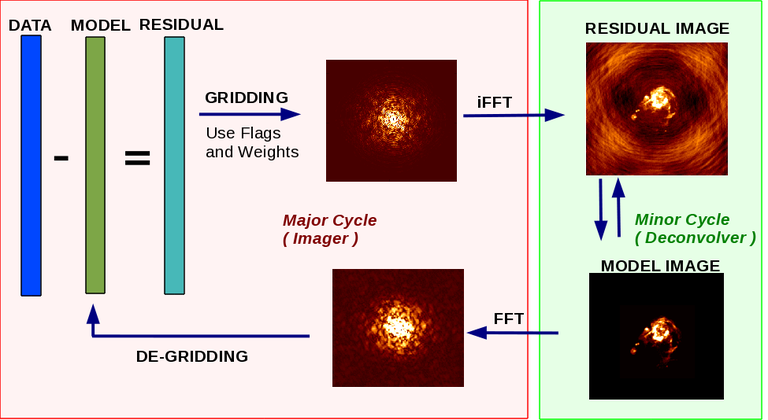

CASA Cycle Reference
Show / Hide ▼The live panels below mirror this major / minor cycle structure: data minus model, gridding and inverse FFT into the residual image, image-domain deconvolution, then FFT and de-gridding back.

Figure credit: NRAO / CASA documentation. Source: casadocs.readthedocs.io
Live CASA-Style Flow
(Imager)
(Deconvolver)
Execution Highlighting
Gridding & Weighting
npixels footprint.
Best point-source sensitivity. Dense central uv regions dominate, so the dirty beam keeps broader wings and stronger sidelobes.
Each occupied uv cell contributes comparably. Resolution improves and sidelobes tighten, but thermal sensitivity drops.
CASA-style robust weighting blends natural and uniform. Positive robust stays sensitivity-friendly; negative robust behaves more like uniform.
Local density is measured over a larger uv neighborhood. Increasing npixels makes the weighting less sensitive to tiny cell-to-cell fluctuations.